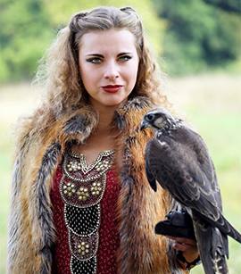
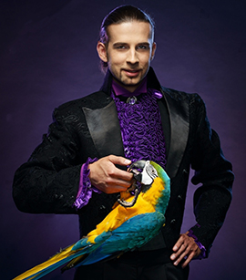
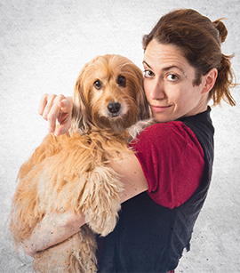

الفريق
تعرّف على المختصين الذين يصنعون رعاية بيتلي الهادئة والواثقة.
يجمع هذا الفريق بين التفكير الطبي الدقيق والطمأنينة والصبر والدفء الذي تحتاجه العائلات في المواقف الحساسة.
المختصون
فريق اختير للمهارة الطبية والثبات الإنساني معاً.


تسليط الضوء على طبيبة
تمنح د. لينا هارت لطفاً حقيقياً للحظات التي تخشاها العائلات عادة.
يركز عملها على الوقاية وراحة المريض وجعل الاستشارة الأولى أقل رهبة للحيوانات القلقة والأصحاب المتوترين.
يعرفها المرضى بطريقتها في تهدئة الغرفة. وتثق بها العائلات لأنها تشرح العلاج بدقة ودفء بدلاً من السرعة أو الضغط.
الطب الوقائي ومسارات العافية
التعامل مع الحيوانات القلقة وإرشاد العائلة
تخطيط صحي طويل المدى
الرعاية تبدأ بأشخاص تثق بهم
تحدث مع فريق بيتلي حول ما يحتاجه حيوانك الأليف في المرحلة القادمة.
كل فرد في العيادة يساهم في الجو الذي تتذكره العائلات. تواصل معنا وسنساعدك على تحديد الخطوة التالية.
تواصل مع الفريق